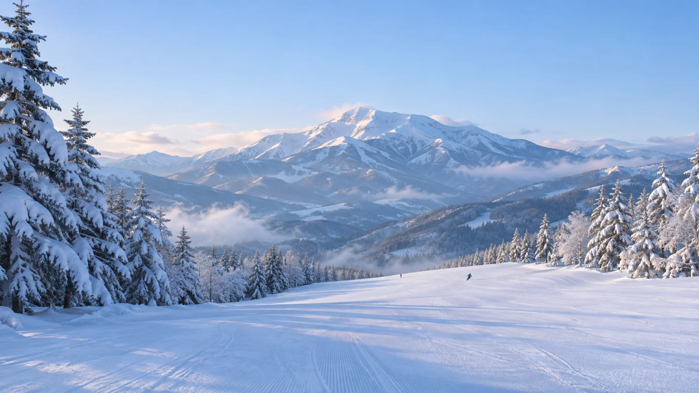

WEB DESIGN · STUDY PROJECT
八沢スキー場
樹氷の森を抜けて、八沢の絶景へ。
架空のスキー場を題材にした学習・作品見本です。実在する施設の案内や営業情報ではありません。画像にはAI生成を使用しています。

作品の目的
雪景色を落ち着いて楽しみながら、コース・料金・施設・アクセスを一つのページで探せる、家族にも親しみやすい架空リゾートの紹介サイトを目指しました。
担当と制作方法
陽奈が世界観や写真の見せ方、コースの内容、コピーなどを対話の中で選択・確認。AIアシスタントの陽葵が相談相手としてページ実装、画像の準備、調整と確認を担当しました。コース・施設・料金・時刻は作品のための架空設定です。
ヒーロー、コース、施設、マップ背景にはAI生成画像を使用。地図のコース線・番号・案内文字は、あとから位置を編集できるようページ上に重ねています。別々に生成した写真はテーマをそろえたイメージで、ひとつの実在地形を撮影した写真ではありません。
見直したところ
写真と情報
前：景色を大きく見せる一方、スマホでは写真が小さく、画像の容量も大きい状態。
後：スマホでは写真を横に送れる形にし、原本を残して画面向け画像を別に用意。世界観と見やすさの両立を目指しました。
コースマップ
前：雪山にコース線を置いた概略図で、リフトとのつながりが分かりにくい状態。
後：山麓・乗り継ぎ・リフト３本と４コースを整理し、帰り道も追加。横に動かせる地図と文章の両方でつながりを伝えます。
情報の伝え方
前：初めての人が知りたい営業時間やバスの詳細が不足。
後：架空であることを明記した上で営業時間、半日券の利用時間、バスの便を追加しました。
確認状況
ローカルのブラウザで画面幅ごとの表示やリンク・言語切り替えを確認しています。実際のiPhoneでサイトを表示したことはありますが、今回の修正後のタッチ操作、スクリーンリーダー、低速回線での速度は未確認です。
このサイトは架空のスキー場を題材にした作品見本です。第三者による採用を示すものではありません。